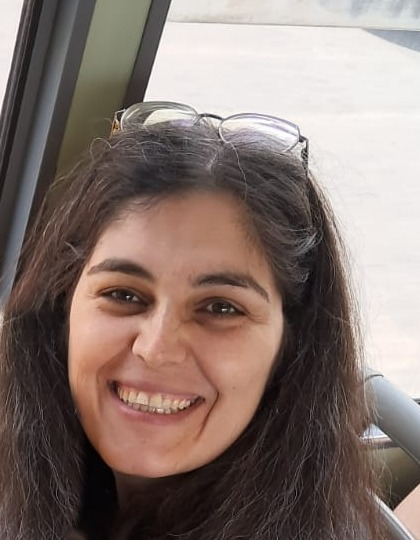

Junior Professor (Chaire de professeur junior)
ERIC laboratory, Data Mining and Decision (DMD) team
Université Lumière Lyon 2
5 avenue Pierre Mendès France, 69676 Bron Cedex, France
I am a Junior Professor (chaire de professeur junior) at Université Lumière Lyon 2, in the Data Mining and Decision team of the ERIC laboratory. My chair, funded by the French National Research Agency (ANR), studies how to make the alignment of large language models robust, pluralistic and efficient, with applications to digital humanities.
I received my PhD in computer science from Université Sorbonne Paris Nord (formerly Université Paris 13) in 2016, with a thesis on Elicitation and planning in Markov decision processes with unknown rewards. I was then a teaching and research fellow (ATER) at Université Paris Dauphine, and a postdoctoral researcher in the CODAG team of the GREYC laboratory (Université de Caen Normandie) from 2017 to 2018. In 2018, I joined the De Vinci Research Center (Pôle Léonard de Vinci, Paris La Défense), first as a postdoctoral researcher (2018–2019), then as an assistant professor (2019–2022). From 2022 to 2025, I was a Master Researcher at Ericsson, before joining Lyon 2 in December 2025.
My research interests include decision-making, reinforcement learning, and optimization, with a particular focus on robustness and uncertainty quantification and their applications to large language models and networked systems.
I am interested in the alignment and calibration of large language models through pre-training, supervised fine-tuning, and reinforcement learning. I am also interested in studying language models from the perspective of constraints, coordination, and interactions between their different components and agents.
| Name | Years | Thesis | Co-supervision |
|---|---|---|---|
| Théo Zangato | 2021–2026 | Améliorer la généralisation et la capacité de prévision en apprentissage par renforcement | Aomar Osmani |
| Louis Zigrand | 2020–2023 | Learnheuristics for dynamic demand-responsive transport systems | Roberto Wolfler Calvo, Emiliano Traversi |
| Name | Year | Topic | Collaborators |
|---|---|---|---|
| Emma Carpanin | 2026 | ||
| Mahdi Salmani Zarchi | 2026 | ||
| Nicolas Helson | 2025 | Offline reinforcement learning for network control | |
| Vasileios Koutsoukis | 2025 | Offline reinforcement learning for mobility robustness optimization | Pradeepa Ramachandra, Osama Arouk |
| Charly Alizadeh | 2022 | Learning clique decompositions for semidefinite relaxations of optimal power flow | Miguel F. Anjos, Lucas Létocart, Emiliano Traversi |
| Christophe Haikal | 2022 | Place embeddings across cities in location-based social networks | Christophe Rodrigues, Chongke Bi |
| Sammy Taleb | 2022 | Imitation learning from multiple experts; reinforcement learning for expert finding | Aomar Osmani, Jorge García Flores, Iván Meza |
| Name | Year |
|---|---|
| Amir MalekHosseini | 2026 |
| Mohammad Amanlou | 2026 |
| Yasaman Amou Jafari | 2026 |
2026
2025
2024
2023
2022
2021
Full list on Google Scholar and DBLP.
I teach machine learning and artificial intelligence at the undergraduate and graduate levels. Current courses:
Are you a Master's or Bachelor's student interested in machine learning, natural language processing, or reinforcement learning? Research internships are sometimes available. Please contact me with your CV and a few lines on what interests you.
In my free time, I draw and paint. I read about philosophy and enjoy running and swimming when I can. I also care about environmental and ethical issues.